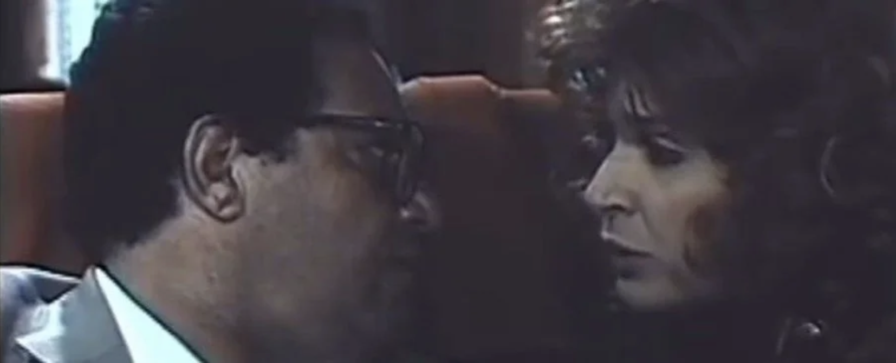

Mohamed Nabih's Anah w ant w saat al-safr (You and Me and the Hours of the Journey, 1988)
Terrible make up, big hair, long oval fingernails. The 1980s were not kind to fashion, but 1988 was an interesting year for film.
Examples include Mohamed Khan's An Important Man's Wife, Mohamed Abdel Aziz's The Night of the Arrest of Bakiza and Zaghloul (the film version of a super successful comedy series), Caught in the Act (featuring what would become Samah Anwar's signature role, the uncompromising cop battling crime — which prefigures Ahmed al-Saqqa by two decades) and Time of the Forbidden (a romantic tragedy featuring corrupt politicians and a lot of drugs). A recurring theme of the decade was the the drug (specifically heroin) pandemic that hit Egypt during the time. Some films exalt the work of law enforcement (Anwar being the leading actor of such roles), while others implicate politicians and enforcement personnel in the social and political malaise (in the works of Khan and Atef al-Tayeb, for example).
It does contain a bit of the social critique Hamed is known for, but here it feels forced, didactic and lacks the comedic brilliance of some of the Imam-Arafa collaborations.
The film pivots around erstwhile lovers Aziz (Yehia al-Fakharani) and Salwa (Nelly), who are reunited by chance on a train ride to Alexandria. Thankfully the film is not a duo-drama as neither Fakharani nor Nelly give their best performances: Aziz's disgruntled intellectual persona (perhaps a reflection of Hamed himself?) often slips into un-endearing sermonizing mode, and Nelly's hysterical facial twitches are hard to bear. But plenty of comic relief comes through a host of supporting characters who break the constipated mood of the lovers' reunion. These include a married couple who constantly are trying to avoid each other (a buxom Laila Fahmy and a perpetually annoyed Nabil Badr), a group of curiously silent friends playing Conquian (the unassuming, naturally funny Mohamed al-Sharqawy particularly stands out), and the terrifying and equally fidgety passenger who keeps trying to steal Aziz's seat.
Through Hamed's stilted, preachy dialogue we get to understand that Salwa and Aziz were lovers a decade ago, engaged to be married, but Salwa broke their engagement to marry a rich businessman. This is another recurring theme in films of the 1980s, reflecting the changing economy and the rise of a parasitic class of businessmen due to Anwar Sadat's neoliberal policies.
It starts when Aziz realizes he cannot bear yet another traffic jam and jumps on the nearest moving locomotive, and from the senseless congestion to the very idea of escaping the city, the whole film is infused with the overwhelming claustrophobia of the times.
Aziz's journey is the antidote of Cairo's unmoving vehicles, constantly caught in a blockade, and the idea that he would get on train that goes anywhere, as long as it keeps moving, is an obvious metaphor of an escape from the urban inferno, one that becomes sentimentalized when paralleled with the journey to his past, prompted when he is reunited with Salwa and both have to confront each other with their choices.
Aziz's self-righteousness and holier-than-thou attitude towards Salwa, coupled with his general sense of ennui about everything Cairo has become, really does convey a sense of failed idealism, an idealism that has no place, that speaks a language no one understands and that is constantly consuming itself in its own moral outrage. This is offset by the "fashionable" and coquettish Salwa, a trophy-wife who is at odds with herself for betraying her true love, and who is immediately put on trial and gives the most predictable excuse: she had to marry a rich businessman to save her family from destitution. The two leads embody the frustrations and limitations of the times, the choices people had (or didn't have), yet neither go beyond the prescribed lines of their clichéd characters and story arcs. And even in moments that ingeniously capture the spirit of the time — the restlessness, the weight of despair, the senseless drive to escape — Aziz's self-appeasing moralizing negates any empathetic effect.
Shot by Tarek al-Telimsany, it is one of the few Egyptian films to be filmed mostly on a train, but most internal scenes suffer from strange lighting and look as if they were shot with the wrong lens — there's a continual struggle to get the two ex-lovers comfortably in the frame. The external shots, though, are taken at head height, as though from Aziz's eyes, giving a sense of intimacy and direct engagement.
Yet You and Me and the Hours of the Journey gives us a fascinating glimpse of Cairo's urban environment in the late 1980s, which remains largely unchanged but perhaps looks worse then: unbearable traffic, unruly construction on 6th of October Bridge, the rural-urban dislocation caused by relentless internal migration. We get an aural glimpse into the music of the time as well: in the opening scene Aziz walks around downtown Cairo trying to catch a ride home, picking up the sounds of the music played in different vehicles as he walks (from Nadia Mostafa's lamenting masafat to Adawya's "shaking love" track through songs from the movie Al-Keif).
And Aziz's accidental journey brutally confirms that romance is dead, that the idealism of the earlier decades is gone in a neoliberal world populated by self-interested, parasitic capitalists, that there is no place for reviving childish dreams or Nasserist visions of progress. Despite its clichés, sentimentality, melodrama and pedantic script, for me You and Me and the Hours of the Journey is an exceptional film in its resolved stoicism that the 1980s was no time for love, and that no amount of nostalgia or nervous tics could change that.